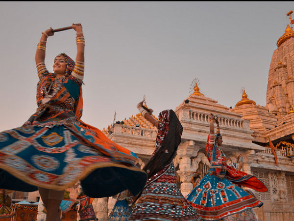

Gujarat, located in western India, is a state with a rich history and a diverse cultural heritage. The region has been inhabited since ancient times and has witnessed the rise and fall of several prominent civilizations. Let's explore the history of Gujarat from a tourism and heritage perspective.
Indus Valley Civilization: Gujarat is believed to have been a part of the ancient Indus Valley Civilization, one of the world's oldest urban civilizations dating back to around 2500 BCE. Excavations at sites like Lothal and Dholavira have revealed the remnants of this ancient civilization, including well-planned cities, intricate drainage systems, and artifacts.
.jpg)
History Of Rulers
Mauryan Empire: During the Mauryan period in the 3rd century BCE, Gujarat was incorporated into the vast Mauryan Empire under the rule of Emperor Ashoka. Ashoka's edicts and pillars have been found in Junagadh, Girnar, and other parts of Gujarat.Gujarat Sultanate: In the 15th century, Gujarat witnessed the rise of the Gujarat Sultanate under the leadership of Sultan Ahmed Shah. The capital city of Ahmedabad was founded during this period and became a major center of trade and commerce.
Mughal Rule: Gujarat came under the control of the Mughal Empire in the 16th century after the emperor Akbar's conquest. Mughal influence can be seen in the architecture of several monuments, including the Adalaj Stepwell and Sarkhej Roza in Ahmedabad.
Maratha Empire: In the 18th century, the Marathas established their dominance over Gujarat. The Gaekwads of Baroda and the Peshwas of Pune played significant roles in this period. The Maharaja Sayajirao University and the Lakshmi Vilas Palace in Vadodara are architectural marvels from this era.
British Rule and Independence: Gujarat became a part of British India in the 19th century. It played an active role in the Indian independence movement, with leaders like Sardar Vallabhbhai Patel hailing from the state. Sabarmati Ashram in Ahmedabad, where Gandhi lived, is now a popular tourist attraction.
Post-Independence: After India gained independence in 1947, Gujarat was carved out as a separate state in 1960. It has since grown into a vibrant and industrially advanced state with a thriving tourism sector.

Places
Gujarat's heritage is reflected in its numerous historical monuments, temples, palaces, and vibrant culture. Some of the must-visit attractions for heritage tourism in Gujarat include the Rani ki Vav stepwell in Patan (a UNESCO World Heritage Site), Sun Temple in Modhera, Champaner-Pavagadh Archaeological Park (a UNESCO World Heritage Site), and the magnificent temples of Somnath and Dwarka.
